Osakishi
大崎市 · Miyagi
Osakishi
Highlighted on the Miyagi map.
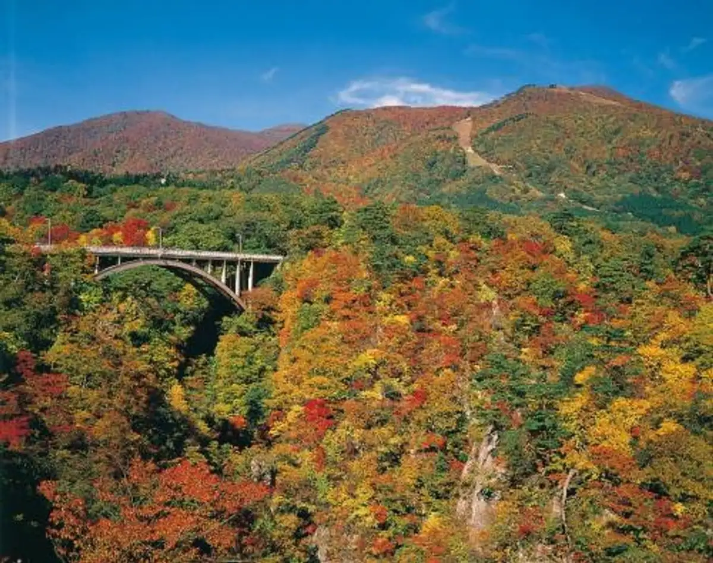
Stay
ホテルセレクトイン古川
Hoteruserekutoin Furukawa
プラザホテル古川（10月1日よりスマイルホテル古川）
Purazahoteru Furukawa ( 10 Gatsu 1 Nichi Yori Sumairuhoteru Furukawa )
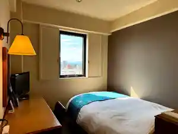
古川天然温泉 ホテルルートイン古川駅前(宮城県)
Furukawa Tennen Onsen Hoteruruutoin Furukawa Ekimae ( Miyagiken )
アパホテル〈宮城古川駅前〉
Apahoteru < Miyagi Furukawa Ekimae >
ファミリーロッジ旅籠屋・長者原ＳＡ店
ファミリーロッジ旅籠屋・長者原SA店
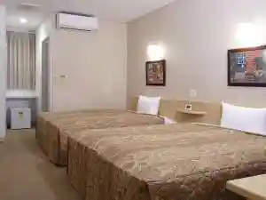
越後屋旅館＜川渡温泉＞
Echigoya Ryokan ＜ Kawatabi Onsen ＞
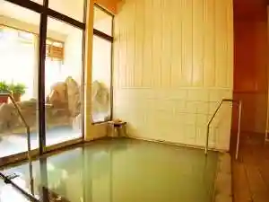
湯あみの宿ぬまくら
Yu Amino Yado Numakura
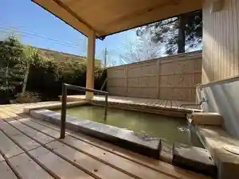
旅館ゆさ
Ryokan Yusa
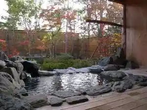
東五郎の湯 高東旅館
Higashi Gorou No Yu Taka Higashi Ryokan
山ふところの宿みやま
Yama Futokorono Yado Miyama
民宿旅館 二宮荘
Minshuku Ryokan Ninomiya Sou
楓
Momiji
久田旅館
Hisada Ryokan
天恵の名湯 いさぜん旅館
Tenkei No Meitou Isazen Ryokan
鳴子温泉郷 勘七湯
Naruko Onsen Sato Kan Shichi Yu
百年の美肌湯と極上の貸切露天風呂 旅館大沼
Hyakunen No Bihada Yu To Gokujou No Kashikiri Rotenburo Ryokan Oonuma
大江戸温泉物語 幸雲閣
Ooedo Onsen Monogatari Sachi Kumo Kaku
元祖「うなぎ湯」の宿 ゆさや旅館
Ganso ( Unagi Yu ) No Yado Yusaya Ryokan
伝統の宿 旅館すがわら
Dentou No Yado Ryokan Sugawara
源蔵の湯 鳴子観光ホテル
Genzou No Yu Naruko Kankou Hotel
扇屋
Ougiya
Dining
いろは食堂 古川支店
Iroha Shokudo Furukawa Shiten
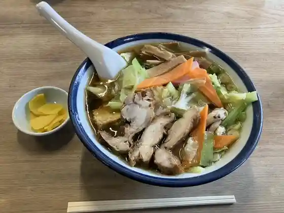
麺屋 奏
Men Ya Sou
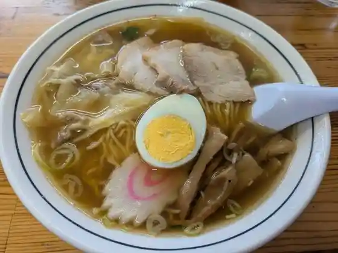
富士屋 古川本店
Fujiya Furukawa Honten
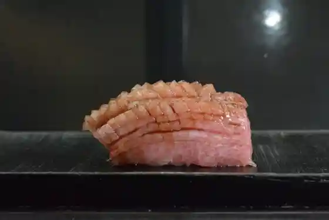
寿し扇
Hisashi Shi Ougi
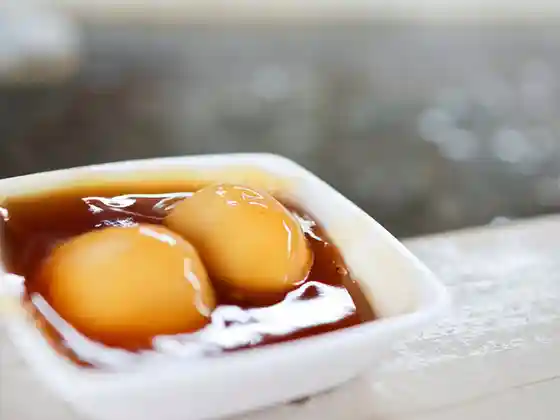
餅処 深瀬
Mochi Tokoro Fukase
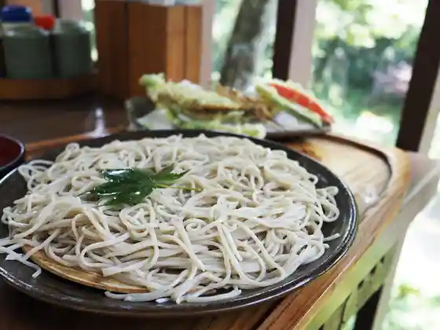
手打そば もみじ野
Teuchi Soba Momiji No
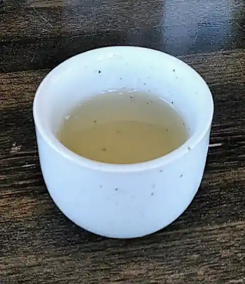
自家製麺 仁
Jikasei Men Hitoshi
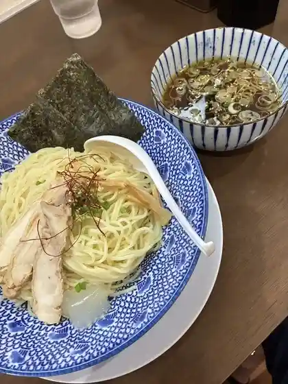
麺屋 いぶき
Men Ya Ibuki
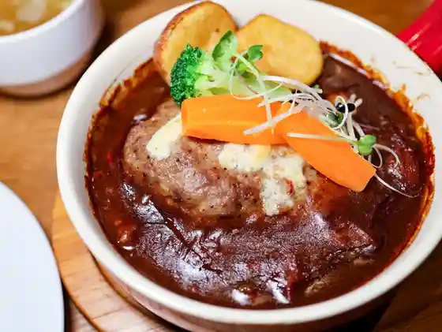
T’s
T’s
愉多工房
Yu Ta Koubou
沖縄そば
Okinawa Soba
担担麺家 たけうち
Tantan Men Ie Takeuchi
福建楼
Fukken Rou
大久商店 山の幸直売店
Oohisa Shouten Yama No Sachi Chokubai Mise
チャイニーズハウス北京
Chainiizuhausu Pekin
レストランふじ
Resutoran Fuji
貴州大飯店
Kishuu Ooi Mise
ザビのカレー
Zabi No Karee
マル寛そばや
Maru Hiroso Baya
三勝食堂
San Kachi Shokudo
作造ハンバーグのみせ竹乃や
Sakuzou Hanbaagu Nomise Take No Ya
藤治朗
Touji Akira
麺屋 匠
Men Ya Takumi
グリーンハウス
Guriinhausu
中華食堂 レンゲ
Chuuka Shokudo Renge
蕎壽庵
Kyou Juan
中華菜房 路
Chuuka Na Bou Michi
麺屋 千葉 JAPAN Miyagi
JAPAN Miyagi
ラ パレット
Ra Paretto
たいこう
Taikou
長者原サービスエリア 下り 軽食・フードコート
長者原サービスエリア 下り 軽食・フードコート
みそ伝 古川店
Miso Den Furukawa Mise
レストラン伊達
Resutoran Date
青柳
Aoyagi
キッチン食堂 城山
Kitchin Shokudo Shiroyama
ゑがほ食堂
Egaho Shokudo
海鮮 たくみ
Kaisen Takumi
炉ばた焼 せのび
Ro Bata Yaki Senobi
味いちもんめ
Aji Ichimonme
長者亭
Chouja Tei
食の茶屋 つくし
Shokuno Chaya Tsukushi
もちべえ バイパス店
Mochibee Baipasu Mise
ドライブイン川原
Doraibuin Kawara
せいじん庵
Seijin Iori
鳴子峡レストハウス
Naruko Kyou Resutohausu
コーヒーハウス純
Koohiihausu Jun
川香菜房 2号店
Kawa Kana Bou 2 Gou Mise
八兆
Hachi Chou
あ･ら･伊達な道の駅
A A Ra Ra Date Na Michi No Eki
森乃館 古川店
Morino Kan Furukawa Mise
なるみ観光ストアー
Narumi Kankou Sutoaa
鉄兵衛 前田バイパス店
Teppei Mamoru Maeda Baipasu Mise
そば処 小花
Soba Tokoro Kobana
とんかつ庄内 古川店
Tonkatsu Shounai Furukawa Mise
Warung Berkah Jaya
Warung Berkah Jaya
鳴子ホテル
Naruko Hotel
ラーメンショップ椿 松山千石店
Raamenshoppu Tsubaki Matsuyama Sengoku Mise
ラーメン食堂 ホームラン
Raamen Shokudo Hoomuran
五福の伊達ちゃんKitchen
Kitchen
博華
Hiroshi Hana
きらく亭
Kiraku Tei
ついてる
Tsuiteru
道の駅三本木やまなみ
Michi No Eki Sanbongi Yamanami
鳴子温泉 湯元 吉祥
Naruko Onsen Yumoto Kichijou
カーステーション 岩出山店
Kaasuteeshon Iwadeyama Mise
カシュカシュ
Kashukashu
大石パン店
Ooishi Pan Mise
手打ちそば 千秋庵
Teuchi Chisoba Senshuu Iori
松倉
Matsukura
食堂みかぶ
Shokudo Mikabu
よし乃や食堂
Yoshi No Ya Shokudo
とり源
Tori Gen
青い虹
Aoi Niji
銀まさ
Gin Masa
小島屋
Kojima Ya
千丸家
Sen Maru Ie
釜平ラーメン
Kama Taira Raamen
菅原食堂
Sugawara Shokudo
鬼そば食堂 てつお
Oni Soba Shokudo Tetsuo
タケダベーカリー
Takedabeekarii
菅原分店765
Sugawara Bunten 765
まるか食堂
Maruka Shokudo
ラーメン ヒバリ カシマダイ
Raamen Hibari Kashimadai
旬彩亭 秀
Jun Sai Tei Shuu
芭蕉庵
Bashou Iori
中国料理川香菜房
Chuugokuryouri Kawa Kana Bou
たかはし亭
Takahashi Tei
旅館大沼
Ryokan Oonuma
割烹料理 石亭
Kappouryouri Sekitei
鳴子観光ホテル
Naruko Kankou Hotel
鯛焼 みやび
Taiyaki Miyabi
大釜もつ煮 五右衛門 古川駅前店
Ookama Motsu Ni Goemon Furukawa Ekimae Mise
花兄園ファーム たまごハウス
Hana Ani Sono Faamu Tamago Hausu
Ｂａｒｂａｒｅ
Barbare
さとのわ 光種
Satonowa Hikari Tane
大黒屋
Daikokuya
キーマカレーとチャイ なるせ堂
Kiimakaree To Chai Naruse Dou
ラーメン ホルモン オールスター
Raamen Horumon Oorusutaa
ラーク プラス
Raaku Purasu
鳴子の米プロジェクト むすびや
Naruko No Kome Purojiekuto Musubiya
田助
Ta Jo
Old River Hamburgers
Old River Hamburgers
旅館すがわら
Ryokan Sugawara
リストランテ UEMON
UEMON
茶房クレイン
Sabou Kurein
厚切りとんかつ よし平 大崎店
Atsushi Kiri Tonkatsu Yoshi Taira Oosaki Mise
ごはん処 らいふ
Gohan Tokoro Raifu
食堂加藤屋
Shokudo Katou Ya
ドライブイン おーとり
Doraibuin Ootori
銀の匙
Gin No Saji
オルガン堂 クラシックス
Orugan Dou Kurashikkusu
道の駅 おおさき
Michi No Eki Oosaki
鉄兵衛
Teppei Mamoru
ハートフルランドジャージー牧場
Haatofururandojaajii Bokujou
ホテル亀屋
Hotel Kameya
cafe gutto
cafe gutto
気仙沼あさひ鮨 古川店
Kesennuma Asahi Sushi Furukawa Mise
vin-ya jete ashigaru
vin-ya jete ashigaru
おかしときっさ たまごや
Okashitokissa Tamagoya
うなぎ湯の宿 旬樹庵 琢ひで
Unagi Yu No Yado Jun Ki Iori Taku Hide
柳月食堂
Yanagi Gesshoku Dou
越後屋旅館
Echigoya Ryokan
坪田菓子店
Tsubota Kashi Mise
らーめん田舎や
Raamen Inaka Ya
香満園
Kaori Man'en
鳴子風雅
Naruko Fuuga
手打ち蕎麦 ふく
Teuchi Chi Soba Fuku
花山太右衛門商店 本店
Hanayama Taemon Shouten Honten
cafe 六十三番屋敷
cafe
パティスリープロムナード
Pateisuriipuromunaado
笙福飯店
Shou Fuku Hanten
寿司正
Sushi Sei
じょん'sキッチン
Jon 's Kitchin
伊達ちゃんベーカリー
Date Chan Beekarii
ラーメン 弘ちゃん
Raamen Hiroshi Chan
らぁめん家
Raamen Ie
あやか食堂
Ayaka Shokudo
町田商店 大崎古川店
Machida Shouten Oosaki Furukawa Mise
石崎屋
Ishizaki Ya
スターメイカーカフェ
Sutaameikaakafe
ホテル オニコウベ
Hotel Onikoube
ハナレイ
Hanarei
三之亟湯
San Yuki Kyoku Yu
大判や たい喜 カインズホーム古川店
Ooban Ya Tai Ki Kainzuhoomu Furukawa Mise
阿部旅館
Abe Ryokan
長者原サービスエリア(上り線)
Choujagahara Saabisueria ( Nobori Sen )
ふじや食堂
Fujiya Shokudo
まる
Maru
ふく福 そばいち
Fuku Fuku Sobaichi
食事処 大賞
Shokuji Tokoro Taishou
煉瓦場
Renga Ba
旬味酒菜 中鉢
Jun Umasake Na Chuubachi
和膳 きたはま
Wa Zen Kitahama
大正堂
Taishou Dou
シャルマン
Sharuman
よきもの喜沢
Yokimono Ki Sawa
ひとつぶ堂
Hitotsubu Dou
とんかつ信ちゃん
Tonkatsu Shin Chan
花山太右衛門商店 バイパス店
Hanayama Taemon Shouten Baipasu Mise
HIPCROPS
HIPCROPS
食事処 まやま
Shokuji Tokoro Mayama
かのや食堂
Kanoya Shokudo
あじわい亭
Ajiwai Tei
カフェテリア アメニティ
Kafeteria Amenitei
菅原おやきや
Sugawara Oyakiya
古川ミルクホール
Furukawa Mirukuhooru
準喫茶カガモク
Jun Kissa Kagamoku
パン工房 パンツクルヒト
Pan Koubou Pantsukuruhito
紅葉軒
Kouyou Ken
花もん
Hana Mon
創作料理 誠 ～Makoto～
Makoto
工房そばの実
Koubou Sobano Mi
カフェ ゆるリーフ
Kafe Yuru Riifu
オレガノ
Oregano
AIN PERLA
AIN PERLA
ロイズ
Roizu
大江戸温泉物語 幸雲閣
Ooedo Onsen Monogatari Sachi Kumo Kaku
浜寿司
Hama Sushi
鶏から揚げ専門 井上商店 古川駅前店
Niwatori Kara Age Senmon Inoue Shouten Furukawa Ekimae Mise
君鮨
Kun Sushi
aladate Gelato & PIZZA
aladate Gelato & PIZZA
中華居酒屋 らんらん
Chuuka Izakaya Ranran
ぬまくら
Numakura
久田旅館
Hisada Ryokan
大江戸温泉物語 ますや
Ooedo Onsen Monogatari Masuya
蔵八亭 古川店
Kura Hachi Tei Furukawa Mise
森栖
Mori Sei
豪ーめん 古川店
Gouu Men Furukawa Mise
麺屋 てんほう
Men Ya Tenhou
カナマル
Kanamaru
韋駄天や
Idaten Ya
キムラベーカリー
Kimurabeekarii
サンエトワール
San'etowaaru
ピッコロ
Pikkoro
タウエモン バイパス店
Tauemon Baipasu Mise
自家製うどん福助
Jikasei Udon Fukusuke
大坂屋
Oosaka Ya
大衆酒場 げんてん
Taishuu Sakaba Genten
あまの食堂
Amano Shokudo
高友旅館
Taka Tomo Ryokan
うまか房
Umaka Bou
加護坊温泉 さくらの湯
Kago Bou Onsen Sakurano Yu
幸花
Sachi Hana
ヤマロク 古川店
Yamaroku Furukawa Mise
ビストロ割烹・侯
ビストロ割烹・侯
おもてなし 佳
Omotenashi Ka
元祖うなぎ湯の宿ゆさや
Ganso Unagi Yu No Yado Yusaya
ＲＥＳＴＡＵＲＡＮＴ ＆ ＢＡＲ 雅朧
RESTAURANT & BAR
Smile Terrace
Smile Terrace
蔵
Kura
フリークス
Furiikusu
食事処 はなまる
Shokuji Tokoro Hanamaru
食事処 山崎
Shokuji Tokoro Yamazaki
みつば屋
Mitsuba Ya
鶏から揚げ専門 井上商店 古川バイパス店
Niwatori Kara Age Senmon Inoue Shouten Furukawa Baipasu Mise
早坂食堂
Hayasaka Shokudo
山ふところの宿 みやま
Yama Futokorono Yado Miyama
仙庄館
Sen Shou Kan
ホテル古川ヒルズ 古川駅前
Hotel Furukawa Hiruzu Furukawa Ekimae
藤島旅館
Fujishima Ryokan
カフェ・アメリカン焼肉 幸
カフェ・アメリカン焼肉 幸
旅館なんぶ屋
Ryokan Nanbu Ya
長者原サービスエリア(下り線) ショッピングコーナー
Choujagahara Saabisueria ( Kudari Sen ) Shoppingukoonaa
中央食堂
Chuuoushokudou
甚六
Jinroku
自家製麺 みや美
Jikasei Men Miya Bi
長者の茶屋
Chouja No Chaya
麺丼処 祝屋
Men Donburi Tokoro Shuku Ya
千両食堂
Senryou Shokudo
肉バル BARBiG
BARBiG
京華苑
Keika En
生蕎麦 登良家
Kisoba Tou Ryouke
SHIME
SHIME
宝
Takara
潟沼レストハウス
Kata Numa Resutohausu
レイナマリア
Reinamaria
かんけつ泉 食堂
Kanketsu Izumi Shokudo
栄堂 穂波店
Sakae Dou Honami Mise
ワンショットバー NAM
Wanshottobaa Nam
カフェ・モンテ
カフェ・モンテ
あいのや 古川東店
Ainoya Furukawa Higashi Mise
Sevendays Coffee
Sevendays Coffee
IVY COFFEE
IVY COFFEE
東多賀の湯
Higashi Taga No Yu
chercheur
chercheur
旅館ゆさ
Ryokan Yusa
峯雲閣
Minegumo Kaku
ペンション森りんこ
Penshon Mori Rinko
ザビマート
Zabimaato
旅館 青葉荘
Ryokan Aoba Sou
旅館 勘七湯
Ryokan Kan Shichi Yu
鳴子旅館
Naruko Ryokan
CREA WEDDING&CAFE
CREA WEDDING&CAFE
楓林
Fuurin
福よせ
Fuku Yose
ふるさと
Furusato
木村食堂
Kimura Shokudo
新富
Shintomi
たんたん
Tantan
つかさ
Tsukasa
カフェ パーシモン
Kafe Paashimon
ゑんどうや
Endouya
スヌーズ
Sunuuzu
徳十郎屋
Toku Juurou Ya
丸長食堂
Maru Chou Shokudo
加護坊 四季彩館
Kago Bou Shiki Sai Kan
ひまわり ヤマザワ古川バイパス店
Himawari Yamazawa Furukawa Baipasu Mise
枝カフェ
Eda Kafe
京屋食堂
Kyouya Shokudo
高東旅館
Taka Higashi Ryokan
旅館 とどろき
Ryokan Todoroki
手延べうどん むぎの里 古川店
Te Nobe Udon Mugino Sato Furukawa Mise
うめぇがすと
Umeegasuto
いろは食堂 第三支店
Iroha Shokudo Daisan Shiten
味かく屋
Aji Kaku Ya
十八番
Juuhachiban
ロブスター
Robusutaa
ホルモンセンターあかしろ
Horumonsentaa Akashiro
彩‐彩
Sai ‐ Sai
豆坂温泉三峰荘
Mame Saka Onsen Mibu Sou
蕎麦酒房 吟昇
Soba Sake Bou Gin Noboru
鶏から揚げ専門 井上商店 古川稲葉店
Niwatori Kara Age Senmon Inoue Shouten Furukawa Inaba Mise
食道苑
Shokudo En
御食事処 かんちゃん
Mike Koto Tokoro Kanchan
志ちゃん
Kokorozashi Chan
(卸)仙台食肉センター
( Oroshi ) Sendai Shokuniku Sentaa
レストラン二葉亭
Resutoran Futabatei
寿しまるでん
Hisashi Shimaruden
わかば食堂
Wakaba Shokudo
焼肉食堂 清和
Yakiniku Shokudo Kiyokazu
ジャンク
Janku
きゅうせい堂
Kyuusei Dou
APA HOTEL 宮城古川駅前
APA HOTEL
しあわせcafe
cafe
ドライブインかとう
Doraibuin Katou
HATANAKA COFFEE ROASTER
HATANAKA COFFEE ROASTER
カフェ アット ホーム
Kafe Atto Hoomu
ひさご食堂
Hisago Shokudo
みちのく煎餅本舗
Michinoku Senbei Honpo
まるぜん
Maruzen
おのや
Onoya
Cafe Repos
Cafe Repos
フード パワー ビーンズ
Fuudo Pawaa Biinzu
さんぽ路
Sanpo Michi
菓子工房 栄堂 台町店
Kashi Koubou Sakae Dou Daimachi Mise
しんとろの湯
Shintorono Yu
みやもと
Miyamoto
あんどー
Andoo
楽味亭 ○ 大山
Raku Aji Tei ○ Ooyama
シネマリオーネ古川
Shinemarioone Furukawa
ごっぱち
Goppachi
まさ膳 ひかり
Masa Zen Hikari
おむすびCafe＆barsakurako
Cafe&barsakurako
オレンジかふぇ
Orenji Kafe
つつみ屋 大崎古川店
Tsutsumi Ya Oosaki Furukawa Mise
しあわせcafe 大崎市図書館店
Shiawase Cafe Oosaki Shi Toshokan Mise
ちょっとはぃったとこの、居酒屋。
Chottohaittatokono , Izakaya .
YON
YON
おおいしや
Ooishiya
スーパーセンター トラスト 岩出山店
Suupaasentaa Torasuto Iwadeyama Mise
ペンション アネックス
Penshon Anekkusu
伊藤商店 古川店
Itou Shouten Furukawa Mise
焼肉冷麺やまなか家 古川店
Yakiniku Reimen Yamanaka Ie Furukawa Mise
寧々家 古川駅前店
Nei (kurikaesi) Ie Furukawa Ekimae Mise
丸亀製麺 古川中島
Marugame Seimen Furukawa Nakajima
ホテルルートイン 古川駅前
Hoteruruutoin Furukawa Ekimae
一ノ蔵
Ichinokura
遠藤屋嘉吉
Endou Yaka Kichi
新澤醸造店
Shinzawa Jouzou Mise
すがわら
Sugawara
ゆの駅 しんとろ
Yuno Eki Shintoro
海山
Umiyama
華の蔵
Hana No Kura
花おりの湯
Hana Orino Yu
しゃぶ亭 こまち
Shabu Tei Komachi
レストハウスかむろ
Resutohausu Kamuro
Ｂａｒ ａｊｉｔ
Bar ajit
やきとり ゆう助
Yakitori Yuu Jo
ひさご菓子店
Hisago Kashi Mise
内川の畔りカフェ
Uchikawa No Aze Ri Kafe
串かつ酒場 なにわ屋本舗
Kushi Katsu Sakaba Naniwa Ya Honpo
旬屋 古川店
Jun Ya Furukawa Mise
ファーストフード 21 スーパーセンタートラスト岩出山店
Faasutofuudo 21 Suupaasentaatorasuto Iwadeyama Mise
Sawa
Sawa
ウジエスーパー 岩出山店
Ujiesuupaa Iwadeyama Mise
ニコカフェ
Nikokafe
旬菜呑処こけし
Jun Na Don Tokoro Kokeshi
楽屋
Gakuya
いたがき菜店
Itagaki Na Mise
新田菓子店
Nitta Kashi Mise
カルン ザ・ビッグ鹿島台店
カルン ザ・ビッグ鹿島台店
ブルーファームカフェ
Buruufaamukafe
松月堂
Matsuzuki Dou
ひまわり ヤマザワ古川北店
Himawari Yamazawa Furukawa Kita Mise
旬菜ゆるり
Jun Na Yururi
駅前食堂 とみ田
Ekimae Shokudo Tomi Ta
大名弁当 駅南店
Daimyou Bentou Eki Minami Mise
ビストロ てっちゃん
Bisutoro Tetchan
飲み喰い処 美味鳥
Nomikui Tokoro Bimi Tori
味の蔵どんつく
Aji No Kura Dontsuku
よもぎのcafe いっきゅう
Yomogino Cafe Ikkyuu
ととや
Totoya
咲楽亭
Saki Raku Tei
千成
Sennari
ノースイースト
Noosuiisuto
GRILL RESTAURANT CHOJYAHARA
GRILL RESTAURANT CHOJYAHARA
和処 ゆう
Wa Tokoro Yuu
コーヒービーンズショップ ナタール
Koohiibiinzushoppu Nataaru
BLUE FARM CAFE
BLUE FARM CAFE
そばうどん さくらや
Sobaudon Sakuraya
祥雲閣
Shouun Kaku
おかしのまやま
Okashinomayama
VERRY VERRY
VERRY VERRY
さかもとのカフェ Cafe SUNS
Cafe SUNS
Tea Room 楓庵
Tea Room
みちのく弁当
Michinoku Bentou
Bar Sato
Bar Sato
A・COOP 沼部店
ACOOP
びっくりドンキー 古川店
Bikkuri Donkii Furukawa Mise
タリーズコーヒー 古川駅店
Tariizukoohii Furukawa Eki Mise
スターバックスコーヒー 古川店
Sutaabakkusukoohii Furukawa Mise
魚べい 古川店
Sakana Bei Furukawa Mise
牛たん炭焼 利久 古川七日町店
Ushi Tan Sumiyaki Toshihisa Furukawa Nanukamachi Mise
コメダ珈琲店 大崎古川店
Komeda Koohii Mise Oosaki Furukawa Mise
ジョイフル 古川店
Joifuru Furukawa Mise
ガスト 古川店
Gasuto Furukawa Mise
味噌工房麺助 古川醸室店
Miso Koubou Men Jo Furukawa Jou Shitsu Mise
居酒屋 こんぱ
Izakaya Konpa
安一チェーン
Yasuichi Cheen
みさをの店
Misawono Mise
居酒屋もん吉
Izakaya Mon Kichi
亀乃里
Kame No Sato
食事処 えんどう
Shokuji Tokoro Endou
インドネパールカレーグラス
Indonepaarukareegurasu
鯛喜 古川穂波店
Tai Ki Furukawa Honami Mise
橋平酒造店
Hashi Taira Shuzou Mise
かくれ家
Kakure Ie
bistro 海
bistro
古梅荘
Ko Ume Sou
旬菜酒楽かぐら
Jun Na Sakahogai Kagura
おみやげ処 おおさき
Omiyage Tokoro Oosaki
大名弁当 北町店
Daimyou Bentou Kitamachi Mise
焼鳥 しぶや家
Yakitori Shibuya Ie
さくら亭
Sakura Tei
ホルモンこがね
Horumon Kogane
トマラーショップ
Tomaraashoppu
しあんくれ～る
Shiankure ~ Ru
おばちゃんキッチン工房 LINK
Obachan Kitchin Koubou Link
ヤマトヤ
Yamatoya
DiningBal銀
DiningBal
マフィンや満天
Mafin Ya Manten
元気くん市場 A-COOPかしまだい店
Genki Kun Shijou A-coop Kashimadai Mise
いずみや
Izumiya
公園の中の宿 ロマン館
Kouen No Nakano Yado Roman Kan
食事処 やすみや
Shokuji Tokoro Yasumiya
食堂 甲子園
Shokudo Koushien
和ヴィーガン あっきーず
Wa Viigan Akkiizu
村本旅館
Muramoto Ryokan
扇屋
Ougiya
Cafe&Bar Nagomi
Cafe&Bar Nagomi
HALO vegan sweets
HALO vegan sweets
RIDER HOUSE & CAFE Layback
RIDER HOUSE & CAFE Layback
居酒屋 おふう
Izakaya Ofuu
くすり&カフェ Patio
& Patio
喫茶 居酒屋 道
Kissa Izakaya Michi
みんなの台所 一力
Minnano Daidokoro Ichiriki
SUN BREW食堂
SUN BREW
中華居酒屋 味和居
Chuuka Izakaya Aji Wa Kyo
おかしの店 ウチダ
Okashino Mise Uchida
お食事処 ちえ
O Shokuji Tokoro Chie
花々亭
Hana (kurikaesi) Tei
cafe＆bar sakurako
cafe&bar sakurako
メローガーデン KASHIMADAI
KASHIMADAI
源氏蛍せんべい 古川直売店
Genji Hotaru Senbei Furukawa Chokubai Mise
家庭料理 ばんざい
Kateiryouri Banzai
鳴子やすらぎ荘
Naruko Yasuragi Sou
仙台っ子 古川店
Sendai Tsu Ko Furukawa Mise
札幌ラーメン どさん子 古川4号店
Sapporo Raamen Dosan Ko Furukawa 4 Gou Mise
くるまやラーメン 古川店
Kurumaya Raamen Furukawa Mise
はま寿司 大崎古川諏訪店
Hama Sushi Oosaki Furukawa Suwa Mise
ジョリーパスタ 大崎古川店
Joriipasuta Oosaki Furukawa Mise
焼肉ホルモン食樂 古川駅前大通店
Yakiniku Horumon Shoku Raku Furukawa Ekimae Oodoori Mise
かっぱ寿司 古川店
Kappa Sushi Furukawa Mise
ココス 古川店
Kokosu Furukawa Mise
肉のしばさき
Niku Noshibasaki
すき家 4号古川西館店
Suki Ie 4 Gou Furukawa Nishikan Mise
牛角 古川店
Gyuukaku Furukawa Mise
いろはにほへと 古川駅前店
Irohanihoheto Furukawa Ekimae Mise
吉野家 ４号線古川栄町店
Yoshinoya 4 Gousen Furukawa Sakaemachi Mise
和風レストランまるまつ 古川駅前店
Wafuu Resutoran Marumatsu Furukawa Ekimae Mise
ミスタードーナツ イオン古川ショップ
Misutaadoonatsu Ion Furukawa Shoppu
マクドナルド 4号線古川荒谷店
Makudonarudo 4 Gousen Furukawa Aratani Mise
福福屋 古川駅前店
Fukufuku Ya Furukawa Ekimae Mise
サイゼリヤ イオンタウン古川店
Saizeriya Iontaun Furukawa Mise
かつや 宮城古川店
Katsuya Miyagi Furukawa Mise
松屋 古川店
Matsuya Furukawa Mise
ケンタッキーフライドチキン 古川店
Kentakkiifuraidochikin Furukawa Mise
串焼楽酒 MOJA 古川店
MOJA
北京
Pekin
たい夢 鹿島台店
Tai Yume Kashima Dai Mise
西條菓子舗 駅前店
Saijou Kashi Ho Ekimae Mise
福ちゃん餃子
Fuku Chan Gyouza
大崎市観光物産センターDozo
Oosaki Shi Kankou Bussan Sentaa Dozo
青沼餅店
Aonuma Mochi Mise
ガトースワン
Gatoosuwan
ゑびす庵
Ebisu Iori
気仙堂
Kesen Dou
大正浪漫
Taishou Rouman
道の駅三本木やまなみ 販売コーナー
Michi No Eki Sanbongi Yamanami Hanbai Koonaa
桜下開花亭
Sakura Shita Kaika Tei
古川食品 株式会社
Furukawa Shokuhin Kabushikigaisha
勝よし
Kachi Yoshi
土井菓子店
Tsuchii Kashi Mise
さとう酒や
Satou Sake Ya
肉のいちまる リオーネ古川店
Niku Noichimaru Rioone Furukawa Mise
森民酒造店
Mori Tami Shuzou Mise
ちば
Chiba
ハーブカントリー
Haabukantorii
障害福祉サービス事業所 工房パルコ
Shougai Fukushi Saabisu Jigyousho Koubou Paruko
れがみ
Regami
あじわいの朝 古川店
Ajiwaino Asa Furukawa Mise
居酒屋 藤
Izakaya Fuji
キッチン mogu
mogu
菅原魚店
Sugawara Sakana Mise
精華堂古川山荘
Seika Dou Furukawa Sansou
宝殿
Houden
紅林
Kurebayashi
モリ カフェ
Mori Kafe
ウジエスーパー 中里店
Ujiesuupaa Nakazato Mise
華月堂
Kazuki Dou
銘酒 和屋
Meishu Wa Ya
味処 さんわ
Ajidokoro Sanwa
ぱん工房 豆豆
Pan Koubou Mame Mame
田楽小舎
Dengaku Kodoneri
西條菓子舗 本店
Saijou Kashi Ho Honten
小野寺氷商店
Onodera Koori Shouten
堀江食堂
Horie Shokudo
食事処おふみ
Shokuji Tokoro Ofumi
肴菜や
Sakana Na Ya
CAFE ポルカ
CAFE
イオン 古川店
Ion Furukawa Mise
寿
Hisashi
CHA-BOU榊
CHA-BOU
ワインバー カラン
Wainbaa Karan
シークレット・ガーデン
シークレット・ガーデン
四季の宿 花渕荘
Shiki No Yado Hanabushi Sou
ミニストップ 宮城田尻店
Minisutoppu Miyagi Tajiri Mise
すえひろ亭
Suehiro Tei
Le Ciel
Le Ciel
ヨークベニマル 古川南店
Yookubenimaru Furukawa Minami Mise
創作割烹 水月
Sousaku Kappou Suigetsu
もり繁寿司
Mori Han Sushi
ギャラリー&カフェ びいひろ
Gyararii & Kafe Biihiro
ゆり
Yuri
はぐろ
Haguro
中川食品店
Nakagawa Shokuhin Mise
パブハウス 満木馬
Pabuhausu Mitsugi Uma
しげ
Shige
手作り惣菜 もいずみ
Tezukuri Souzai Moizumi
cafe MIKUNI
cafe MIKUNI
LAWSON 大崎古川城西一丁目店
Lawson Oosaki Furukawa Jousai Itchoume Mise
有備館
Yuubi Kan
YOHAKU COFFEE
YOHAKU COFFEE
クラフト木村
Kurafuto Kimura
HOSOMINE BASE
HOSOMINE BASE
おじまや
Ojimaya
Cafe 紫星の森
Cafe
ヤマザワ 古川バイパス店
Yamazawa Furukawa Baipasu Mise
守屋魚店
Moriya Sakana Mise
グランド平成
Gurando Heisei
ドン・キホーテ 古川店
ドン・キホーテ 古川店
ビッグボーイ 古川店
Biggubooi Furukawa Mise
幸楽苑 古川バイパス店
Kouraku En Furukawa Baipasu Mise
幸楽苑 新古川店
Kouraku En Shinko Kawa Mise
やよい軒 古川穂波店
Yayoi Ken Furukawa Honami Mise
吉野家 ４号線宮城古川店
Yoshinoya 4 Gousen Miyagi Furukawa Mise
マクドナルド ４号線古川店
Makudonarudo 4 Gousen Furukawa Mise
モスバーガー 古川南店
Mosubaagaa Furukawa Minami Mise
マクドナルド イオン古川店
Makudonarudo Ion Furukawa Mise
うまい鮨勘 ゆとろぎ大崎古川店
Umai Sushi Kan Yutorogi Oosaki Furukawa Mise
狩野食堂
Kano Shokudo
点心ファクトリー すずかけ
Tenshin Fakutorii Suzukake
倉加屋
Kura Ka Ya
鳥文
Tori Bun
ひまわりの丘 売店
Himawarino Oka Baiten
きわみ家
Kiwami Ie
プレリ
Pureri
一輝寿し
Ikki Hisashi Shi
レストランスギヤマ
Resutoransugiyama
すたじあむ
Sutajiamu
海鮮食堂 なぎ 古川店
Kaisen Shokudo Nagi Furukawa Mise
いしどう
Ishidou
Vintage Cafe & bar K
Vintage Cafe & bar K
阿部天ぷら屋
Abe Tenpura Ya
みなみキムチ
Minami Kimuchi
万す井
Man Su I
からあげ専門 由利屋
Karaage Senmon Yuri Ya
キッチンパパ
Kitchinpapa
カフェホプシー
Kafehopushii
山田商店
Yamada Shouten
魚がし一丁
Sakana Gashi Itchou
石巻屋
Ishinomaki Ya
大杉寿司
Oosugi Sushi
ファミリーマート 大崎古川稲葉店
Famiriimaato Oosaki Furukawa Inaba Mise
DOZO
DOZO
居酒屋酒房 頑
Izakaya Sake Bou Gan
体験型農家レストラン 蔵楽
Taiken Kata Nouka Resutoran Kura Raku
一心堂
Isshin Dou
花の館
Hana No Kan
ささきラヂオ店
Sasaki Rajio Mise
鮨処平山
Sushi Shohei Yama
BENCH TIME
BENCH TIME
食堂 笑喜家 wakichi
wakichi
居酒屋 伊豆
Izakaya Izu
食道苑
Shokudo En
やきとり わ
Yakitori Wa
ヤドカリスタンド
Yadokarisutando
喜よし
Ki Yoshi
kito
kito
いづみ
Izumi
わが家
Waga Ie
食彩処 縁
Shokusai Tokoro Heri
日富見家
Nichi Tomi Ken Ie
Samone KITCHEN
Samone KITCHEN
梅っ子
Ume Tsu Ko
味工房いっせい
Aji Koubou Issei
平禄寿司 宮城大崎古川南店
Taira Roku Sushi Miyagi Oosaki Furukawa Minami Mise
無添くら寿司 古川南店
Mu Soe Kura Sushi Furukawa Minami Mise
れすとらん四六時中 古川店
Resutoran Shirokujichuu Furukawa Mise
道とん堀 古川店
Michi Ton Hori Furukawa Mise
仙台ホルモン・焼肉 ときわ亭 古川駅前店
仙台ホルモン・焼肉 ときわ亭 古川駅前店
すたみな太郎 古川三本木店
Sutamina Tarou Furukawa Sanbongi Mise
ドトール コーヒー ショップ 大崎市民病院店
Dotooru Koohii Shoppu Oosaki Shimin Byouin Mise
和風レストランまるまつ 鹿島台店
Wafuu Resutoran Marumatsu Kashima Dai Mise
カルビ大将 古川駅前店
Karubi Taishou Furukawa Ekimae Mise
三代目網元 さかなや道場 古川大通り店
Sandaime Amimoto Sakanaya Doujou Furukawa Oodoori Mise
一口茶屋 古川イオン店
Hitokuchi Chaya Furukawa Ion Mise
ピザハット 古川北町店
Pizahatto Furukawa Kitamachi Mise
魚民 古川駅前店
Uotami Furukawa Ekimae Mise
鳥貴族 古川店
Tori Kizoku Furukawa Mise
不二家 古川いちょう通り店
Fujiya Furukawa Ichou Touri Mise
ほっともっと 古川北町店
Hottomotto Furukawa Kitamachi Mise
モンペリエ ヨークベニマル古川南店
Monperie Yookubenimaru Furukawa Minami Mise
和風レストランまるまつ 古川店
Wafuu Resutoran Marumatsu Furukawa Mise
格安ビールと鉄鍋餃子 3・6・5酒場 古川駅前店
格安ビールと鉄鍋餃子 3・6・5酒場 古川駅前店
モンペリエ 古川福浦店
Monperie Furukawa Fukuura Mise
菓匠 三全 古川台町店
Kashou San Zen Furukawa Daimachi Mise
スターバックスコーヒー 古川北稲葉店
Sutaabakkusukoohii Furukawa Kita Inaba Mise
さくらっこ
Sakurakko
あじまん DCM鹿島台店
Ajiman Dcm Kashima Dai Mise
サーティワンアイスクリーム イオン古川店
Saateiwan'aisukuriimu Ion Furukawa Mise
焼肉きんぐ 古川店
Yakiniku Kingu Furukawa Mise
もち吉 古川店
Mochi Kichi Furukawa Mise
ほっともっと 古川南新町店
Hottomotto Furukawa Minamishinmachi Mise
インドカレー ガネーシャ 古川店
Indokaree Ganeesha Furukawa Mise
凡らく
Bon Raku
ナポリの窯 古川店
Napori No Kama Furukawa Mise
吹上食堂
Fukiage Shokudo
駄菓子や かむろ
Dagashi Ya Kamuro
LAWSON 大崎古川稲葉二丁目店
Lawson Oosaki Furukawa Inaba Nichoume Mise
ストロベリーコーンズ 古川店
Sutoroberiikoonzu Furukawa Mise
養老乃瀧 リオーネ古川店
Yourou No Taki Rioone Furukawa Mise
佐々木ストアー
Sasaki Sutoaa
BistroTakahashi
BistroTakahashi
喜多屋焼麩製造所
Kita Ya Yakifu Seizousho
白松がモナカ本舗 古川店
Shiramatsu Ga Monaka Honpo Furukawa Mise
季格
Ki Kaku
やまんばマルシェ
Yamanba Marushie
風のアトリエ
Kaze No Atorie
大久保製菓
Ookubo Seika
ファミリーマート 岩出山下野目店
Famiriimaato Iwadeyama Shimotsuke Me Mise
松泉堂
Matsu Sendou
あじまん DCM古川北店
Ajiman Dcm Furukawa Kita Mise
ケネス
Kenesu
かなちゃんキムチ
Kanachan Kimuchi
ファミリーマート 宮城三本木店
Famiriimaato Miyagi Sanbongi Mise
大衆食堂 民栄
Taishuushokudou Tami Sakae
串カツ田中 古川店
Kushi Katsu Tanaka Furukawa Mise
セブンイレブン 古川インター店
Sebun'irebun Furukawa Intaa Mise
ファミリーマート 大崎三本木店
Famiriimaato Oosaki Sanbongi Mise
ファミリーマート 古川中里店
Famiriimaato Furukawa Nakazato Mise
内田酒店
Uchida Saketen
喜楽
Kiraku
すずひろ
Suzuhiro
ミニストップ 宮城鹿島台店
Minisutoppu Miyagi Kashima Dai Mise
農産物直売所 旬の店 シンフォニー
Nousanbutsu Chokubai Tokoro Jun No Mise Shinfonii
セブンイレブン 古川稲葉2丁目店
Sebun'irebun Furukawa Inaba 2 Choume Mise
阿部蒲鉾店 古川台町店
Abe Kamaboko Mise Furukawa Daimachi Mise
猫喫茶 空陸家 イオンタウン古川店
Neko Kissa Kuuriku Ie Iontaun Furukawa Mise
コート・ダジュール 古川店
コート・ダジュール 古川店
和風 すなっく 遊
Wafuu Sunakku Yuu
ファミリーマート 岩出山中央店
Famiriimaato Iwadeyama Chuuou Mise
ラーゼン
Raazen
Patisserie Riche
Patisserie Riche
ハルリッカ
Harurikka
シャトレーゼ 古川店
Shatoreeze Furukawa Mise
ほっともっと 鹿島台店
Hottomotto Kashima Dai Mise
おみやげ処ふるかわ
Omiyage Tokoro Furukawa
パン工場 イオン古川店
Pan Koujou Ion Furukawa Mise
ビアレストラン 鳴子の風
Biaresutoran Naruko No Kaze
ホテルクラウンヒルズ 古川
Hoterukuraunhiruzu Furukawa
きときと
Kitokito
モンペリエ ヨークベニマル古川中里店
Monperie Yookubenimaru Furukawa Nakazato Mise
銀座コージーコーナー イオン古川店
Ginza Koojiikoonaa Ion Furukawa Mise
ほっともっと 鹿島台店
Hottomotto Kashima Dai Mise
あかとら
Akatora
ほっともっと 岩出山店
Hottomotto Iwadeyama Mise
フード
Fuudo
こはく湯の宿 中鉢
Kohaku Yu No Yado Chuubachi
サクラサク
Sakurasaku
静岡屋
Shizuoka Ya
らりるkitchen
kitchen
炭火焼鳥 焼き介D・A．//
炭火焼鳥 焼き介D・A.//
肉の店 下山
Niku No Mise Gezan
Ree
Ree
一富士
Ichi Fuji
ミニストップ 古川駅前大通店
Minisutoppu Furukawa Ekimae Oodoori Mise
ごはん時々酒 おらい
Gohan Tokidoki Sake Orai
田尻の手作りハム
Tajiri No Tezukuri Hamu
不二化学食品
Fuji Kagaku Shokuhin
コルプラン
Korupuran
モンペリエ 古川店
Monperie Furukawa Mise
花梨
Karin
鳴子温泉 ゆめぐり広場
Naruko Onsen Yumeguri Hiroba
菊池屋
Kikuchi Ya
みやぎ生協 古川南店
Miyagi Seikyou Furukawa Minami Mise
レトロ居酒屋夢や
Retoro Izakaya Yume Ya
こけし亭
Kokeshi Tei
クスリのアオキ 古川駅東店
Kusuri No Aoki Furukawa Eki Higashi Mise
とことん亭
Tokoton Tei
お茶彦 イオン古川店
O Cha Hiko Ion Furukawa Mise
快活CLUB 古川店
CLUB
親父の厨房
Oyaji No Chuubou
オーセンティックバー ルドルフ
Oosenteikkubaa Rudorufu
ごはんどき 古川店
Gohandoki Furukawa Mise
星の湯旅館
Hoshi No Yu Ryokan
居酒屋 道
Izakaya Michi
魚割烹 笹喜
Sakana Kappou Sasa Ki
ホテルニューあらお
Hoterunyuu Arao
ベルビュー
Berubyuu
セブンイレブン 鳴子末沢店
Sebun'irebun Naruko Suezawa Mise
一ノ蔵
Ichinokura
プラザホテル古川
Purazahoteru Furukawa
岩出山家庭ハム
Iwadeyama Katei Hamu
NewDaysミニ 古川4号
NewDays 4
ファミリーマート 古川穂波店
Famiriimaato Furukawa Honami Mise
ダイニング酒場 伊勢
Dainingu Sakaba Ise
石巻 白謙 藤崎 古川店
Ishinomaki Shiro Ken Fujisaki Furukawa Mise
ギフトプラザ 古川店
Gifutopuraza Furukawa Mise
ファミリーマート 岩出山池月店
Famiriimaato Iwadeyama Iketsuki Mise
スタジオ どどいち
Sutajio Dodoichi
LAWSON 大崎古川駅南店
LAWSON
セブンイレブン 古川穂波７丁目店
Sebun'irebun Furukawa Honami 7 Choume Mise
セブンイレブン 大崎古川新田店
Sebun'irebun Oosaki Furukawa Nitta Mise
愛菜 べんとう
Aina Bentou
新宿さぼてん 古川イオン店
Shinjuku Saboten Furukawa Ion Mise
寒梅酒造
Kanbai Shuzou
LAWSON 大崎古川十日町店
LAWSON
シマダヤ東北 ギフト館
Shimadaya Touhoku Gifuto Kan
姥の湯
Uba No Yu
のみ処 開
Nomi Tokoro Kai
エムアイプラザ 古川店
Emuaipuraza Furukawa Mise
ファミリーマート 大崎市民病院店
Famiriimaato Oosaki Shimin Byouin Mise
民宿旅館 二宮荘
Minshuku Ryokan Ninomiya Sou
燦呂道
San Ro Michi
LAWSON 大崎古川諏訪二丁目店
Lawson Oosaki Furukawa Suwa Nichoume Mise
キムチの石川
Kimuchi No Ishikawa
喰菜酒肴なか乃
Shoku Na Shukou Naka No
ヨークベニマル 古川福浦店
Yookubenimaru Furukawa Fukuura Mise
おでん屋 笑美
Oden Ya Emi
ヨークベニマル 古川中里店
Yookubenimaru Furukawa Nakazato Mise
カフェ ミンテ
Kafe Minte
初音旅館
Hatsune Ryokan
中森豆腐店
Nakamori Toufu Mise
ファミリーマート 古川工業高校前店
Famiriimaato Furukawa Kougyoukoukou Mae Mise
栄や
Sakae Ya
じゅんひキムチ
Junhi Kimuchi
セブンイレブン 古川駅南3丁目店
Sebun'irebun Furukawa Eki Minami 3 Choume Mise
ラ・クラージュ
ラ・クラージュ
土井
Tsuchii
セブンイレブン 大崎古川南町2丁目店
Sebun'irebun Oosaki Furukawa Minamimachi 2 Choume Mise
美代寿司
Miyo Sushi
セブンイレブン
Sebun'irebun
アルビスト
Arubisuto
松本豆腐店
Matsumoto Toufu Mise
ファミリーマート 古川大江向店
Famiriimaato Furukawa Ooe Kou Mise
マハロダイニング 古川店
Maharodainingu Furukawa Mise
ティーラウンジ四季
Teiiraunji Shiki
インドネパールカレー グラス
Indonepaarukaree Gurasu
尾形商店
Ogata Shouten
薬王堂 古川城西店
Yakuou Dou Furukawa Jousai Mise
ゴルフ&レストラン T-shot
& T-shot
セブンイレブン 大崎市役所前店
Sebun'irebun Oosaki Shiyakushomae Mise
セブンイレブン 大崎岩出山店
Sebun'irebun Oosaki Iwadeyama Mise
薬王堂 竹ノ内店
Yakuou Dou Take No Uchimise
LAWSON 大崎三本木店
LAWSON
ちいくろ
Chiikuro
産直トマト無人販売所センター
Sanchoku Tomato Mujin Hanbaijo Sentaa
あさひや
Asahiya
菓匠オオクボ
Kashou Ookubo
マルセンファーム 直売所
Marusenfaamu Chokubai Tokoro
カワチ薬品 古川店
Kawachi Yakuhin Furukawa Mise
ラウンジあおば
Raunji Aoba
こけし堂 峽
Kokeshi Dou Kyou
かむろ荘
Kamuro Sou
カネモ
Kanemo
カラバシュ
Karabashu
Bar en
Bar en
旬宅・みやもと
旬宅・みやもと
五湯茶屋
Go Yucha Ya
とり山
Tori Yama
赤坂
Akasaka
大新館
Dai Shinkan
松竹寿司
Shouchiku Sushi
セブンイレブン 大崎古川福沼2丁目店
Sebun'irebun Oosaki Furukawa Fuku Numa 2 Choume Mise
おかあさんの創作料理 人生
Okaasanno Sousaku Ryouri Jinsei
吾木香
Waremokou
あすか旅館
Asuka Ryokan
西多賀旅館
Nishitaga Ryokan
四季
Shiki
めん六や 古川店
Men Roku Ya Furukawa Mise
ファミリーマート 古川駅前大通店
Famiriimaato Furukawa Ekimae Oodoori Mise
かざぐるま
Kazaguruma
居酒屋あづみ
Izakaya Azumi
遊ちゃん
Yuu Chan
BAR LADLEY
BAR LADLEY
秀松寿司
Hidematsu Sushi
隆陽館
Takashi You Kan
燦心花
San Kohana
ヨガアンドカフェ サントーシャ
Yogaandokafe Santoosha
シェリー
Shierii
ジラフ 大崎古川店
Jirafu Oosaki Furukawa Mise
日本料理 四方良
Nihonryouri Shihou Ryou
大衆屋台 三ツ星
Taishuu Yatai San Tsu Hoshi
Strawberry Room 古川駅前大通り店
Strawberry Room
旅館弁天閣
Ryokan Benten Kaku
馬場温泉
Baba Onsen
いさぜん旅館
Isazen Ryokan
安弾亭
An Dan Tei
おでん屋 笑美
Oden Ya Emi
Seafood Restauranttakumi
Seafood Restauranttakumi
Riches of the Soil Directly Selling Daikyu
Riches of the Soil Directly Selling Daikyu
Charmant
Charmant
Kisetsuryori Tokiwa
Kisetsuryori Tokiwa
Tojiro
Tojiro
Coffee House Jun
Coffee House Jun
Eikoku Sabo Morisu
Eikoku Sabo Morisu
Egao Shokudo
Egao Shokudo
Yasai Chubo Zen
Yasai Chubo Zen
Koyoken
Koyoken
Neneya Furukawa Ekimae
Neneya Furukawa Ekimae
Shunmi Shusai Chubachi
Shunmi Shusai Chubachi
Kyujuan
Kyujuan
Hatcho
Hatcho
Iroha Shokudo Furukawa
Iroha Shokudo Furukawa
Doppuri
Doppuri
Drive in Ootori
Drive in Ootori
Ryugetsu Shokudo
Ryugetsu Shokudo
Kei
Kei
Silver Spoon
Silver Spoon
Freaks
Freaks
Hompo Ichinosaka Mochiya
Hompo Ichinosaka Mochiya
Lark
Lark
Nandemoya
Nandemoya
Himalaya Furukawa
Himalaya Furukawa
Preri
Preri
Inoue Shoten
Inoue Shoten
Restaurant Date
Restaurant Date
Shoya Furukawa Ekimae
Shoya Furukawa Ekimae
Sabo krein
Sabo krein
Hamazushi Osaki Furukawa Suwa
Hamazushi Osaki Furukawa Suwa
Mebuki
Mebuki
Yuki Shokudo
Yuki Shokudo
Bellevue
Bellevue
Hikarizushi
Hikarizushi
Masui
Masui
Tea Maruyu
Tea Maruyu
Uebei Furukawa
Uebei Furukawa
Ann Marrone
Ann Marrone
Restaurant Suisha
Restaurant Suisha
Green Green Chojahara Nobori Restaurant
Green Green Chojahara Nobori Restaurant
Sobadokoro Kobana
Sobadokoro Kobana
Ju Hachi Ban
Ju Hachi Ban
Restaurant Big Boy Furukawa
Restaurant Big Boy Furukawa
Oishikoku Datena Ajikurabe Chojahara Sa Down
Oishikoku Datena Ajikurabe Chojahara Sa Down
Saint Etoile
Saint Etoile
Ito Shoten Osaki
Ito Shoten Osaki
Restaurant Fuji
Restaurant Fuji
Shunsaitei Hide
Shunsaitei Hide
Coco s Japan
Coco s Japan
Stamina Taro Furukawa Sanbongi
Stamina Taro Furukawa Sanbongi
Gusto Furukawa
Gusto Furukawa
Kinchan Shokudo
Kinchan Shokudo
Kantanya Chojahara SA
Kantanya Chojahara SA
Kanade
Kanade
Imamura Ya
Imamura Ya
Yukihana
Yukihana
Kimizushi
Kimizushi
Koryori Ichi
Koryori Ichi
Gyukaku Furukawa
Gyukaku Furukawa
Tetsube Maeda Bypass
Tetsube Maeda Bypass
Danmaya Suisan Rione Furukawa
Danmaya Suisan Rione Furukawa
One Shot Bar Nam
One Shot Bar Nam
La Palette
La Palette
Kamon
Kamon
Ramen Hormone All Stars
Ramen Hormone All Stars
Chinese Restaurant Senko Saibo
Chinese Restaurant Senko Saibo
Car Station Iwadeyama
Car Station Iwadeyama
Bon Bori
Bon Bori
Dohtonbori
Dohtonbori
Bakery Toto
Bakery Toto
Nico Cafe
Nico Cafe
Uokappo Sasaki
Uokappo Sasaki
Osakaya Pastry
Osakaya Pastry
Ramen Shop Tsubaki Matsuyama Sengoku
Ramen Shop Tsubaki Matsuyama Sengoku
Genman
Genman
Kaneketsusen Restaurant
Kaneketsusen Restaurant
Rest House Kamuro
Rest House Kamuro
Nabe Izakaya Oichi
Nabe Izakaya Oichi
Senko Saibo 2Nd Store
Senko Saibo 2Nd Store
Fukinoto
Fukinoto
Rest House Salute
Rest House Salute
Satozoen
Satozoen
Dosanko Kashimadai
Dosanko Kashimadai
Hannoki
Hannoki
Big Star Nagoomian
Big Star Nagoomian
Sushi Maruden
Sushi Maruden
Tetsube Furukawa
Tetsube Furukawa
Shoraku
Shoraku
Kyokaen
Kyokaen
Noridokoro Kuidokoro Kaikatei Furukawadaimachi
Noridokoro Kuidokoro Kaikatei Furukawadaimachi
Cafeteria Amenity
Cafeteria Amenity
Tokijiro Sushi
Tokijiro Sushi
Sushi Dokoro Hezan
Sushi Dokoro Hezan
Shichirinyakiniku Fukuro
Shichirinyakiniku Fukuro
Ajihei
Ajihei
Ramendo Sendaikko Furukawa
Ramendo Sendaikko Furukawa
Beijing
Beijing
Uenono Rest House
Uenono Rest House
Joyfull
Joyfull
Aburin
Aburin
Seiryu
Seiryu
Yogoro Sushi
Yogoro Sushi
Nanbu Kajiki Furukawa
Nanbu Kajiki Furukawa
Heirokuzushi Furukawa Minami
Heirokuzushi Furukawa Minami
Lodge Rempo
Lodge Rempo
Natal Coffee Beans
Natal Coffee Beans
Jolly Pasta Osaki Furukawa
Jolly Pasta Osaki Furukawa
Tampopo
Tampopo
La Courage
La Courage
Juraku Shokudo
Juraku Shokudo
Furin
Furin
Edogawa
Edogawa
Chinese Komanen
Chinese Komanen
Keiaru
Keiaru
Yakkozushi
Yakkozushi
Kotobukiya
Kotobukiya
Shofukuhanten
Shofukuhanten
Chiechan Shokudo
Chiechan Shokudo
Meal Processing Endo
Meal Processing Endo
Yokozunazushi
Yokozunazushi
Onibe
Onibe
Buckwheat Cafe Tdenden
Buckwheat Cafe Tdenden
Kaizan
Kaizan
Restaurant Bar Garou
Restaurant Bar Garou
Yakinikutachibana
Yakinikutachibana
Yogoro Sushi Nishi Furukawa
Yogoro Sushi Nishi Furukawa
Ando Pastry
Ando Pastry
Kisenzushi
Kisenzushi
Shunsai Yururi
Shunsai Yururi
Tapas
Tapas
Hayabusa Dininig Room
Hayabusa Dininig Room
Ramen Shop Babaya
Ramen Shop Babaya
Ichikuri Shokudo
Ichikuri Shokudo
Ban Ya Kashimadai
Ban Ya Kashimadai
Gyokusendo
Gyokusendo
Ramen Shop Furukawa
Ramen Shop Furukawa
Jidorina Furukawa
Jidorina Furukawa
Restaurant Sugiyama
Restaurant Sugiyama
Chelsea Cafe
Chelsea Cafe
Chinese Cafeteria Hoikoro
Chinese Cafeteria Hoikoro
Belz
Belz
Mikakuya
Mikakuya
Ryuusuirou
Ryuusuirou
Monja Izakaya Tokko
Monja Izakaya Tokko
Ramen Inakaya
Ramen Inakaya
Fukuro
Fukuro
Korin
Korin
Marumatsu Aeon Town Furukawa
Marumatsu Aeon Town Furukawa
Gochisokan Furukawa Eki Bldg
Gochisokan Furukawa Eki Bldg
Karaoke Yamabiko
Karaoke Yamabiko
Miyozushi
Miyozushi
Shelly
Shelly
Kohanten
Kohanten
Yakiniku Juen
Yakiniku Juen
Billiards Cafe Inside
Billiards Cafe Inside
Chuo Shokudo
Chuo Shokudo
Edomasasushi
Edomasasushi
Steakone Furukawaeki Higashi
Steakone Furukawaeki Higashi
Chinese Restaurant Mantensei Furukawa
Chinese Restaurant Mantensei Furukawa
Cafe Karumu
Cafe Karumu
Beijing
Beijing
Lobster
Lobster
Sushi Sen
Sushi Sen
Roran
Roran
Hakka
Hakka
Kinkaen
Kinkaen
Blue Heart
Blue Heart
Meal Processing Mayama
Meal Processing Mayama
Soba Kobo Mozume Soba
Soba Kobo Mozume Soba
Yakiniku Yagiya Furukawa
Yakiniku Yagiya Furukawa
Misojin
Misojin
Idumi
Idumi
Calabash
Calabash
Chikuro
Chikuro
Drive In Kato
Drive In Kato
Restaurant Clown
Restaurant Clown
Kotobuki
Kotobuki
Shidabashi Shokudo
Shidabashi Shokudo
Keema Curry and Chai Narusedo
Keema Curry and Chai Narusedo
Ration
Ration
Eitaro Furukawa
Eitaro Furukawa
Experience Type Farmer Restaurant Zouraku
Experience Type Farmer Restaurant Zouraku
Jidai Ya Furukawa Bypass
Jidai Ya Furukawa Bypass
Albist
Albist
Furuya
Furuya
Restaurant Futaba Tei
Restaurant Futaba Tei
Genkotsu Ya Furukawa Rocktown
Genkotsu Ya Furukawa Rocktown
Uo Gashi Itcho
Uo Gashi Itcho
Kitanoichiba Furukawa Ekimae
Kitanoichiba Furukawa Ekimae
Chuka Shokudo Renge
Chuka Shokudo Renge
Sobabo Ginsho
Sobabo Ginsho
Tea Sweets Store Charen
Tea Sweets Store Charen
Torichan Furukawa
Torichan Furukawa
Ramen Shop Sambongi
Ramen Shop Sambongi
Fumi Sushi
Fumi Sushi
Fukigami Restaurant
Fukigami Restaurant
Takabibon
Takabibon
Debu
Debu
Kompa K K
Kompa K K
Kompa
Kompa
Misao No Mise
Misao No Mise
Makiba
Makiba
Torai
Torai
Kashima Ya Shokudo
Kashima Ya Shokudo
Doi
Doi
Manekineko Kashimadai
Manekineko Kashimadai
Kappo Takumi
Kappo Takumi
Ebisu An
Ebisu An
Irori
Irori
Hino Pastry
Hino Pastry
Kagetsu
Kagetsu
Endoya
Endoya
Hifumiya
Hifumiya
Kamameshi Hyakuten Iwadeyama
Kamameshi Hyakuten Iwadeyama
Tsukisekai
Tsukisekai
Pastry Karunza Big Kashimadai
Pastry Karunza Big Kashimadai
Fukuda Confectionery
Fukuda Confectionery
Doi Confectionery
Doi Confectionery
Taimu Kashimadai
Taimu Kashimadai
Dottoko
Dottoko
Oyaji No Chubo
Oyaji No Chubo
Drive In Iwadeyama
Drive In Iwadeyama
Akasaka
Akasaka
Kagetsu
Kagetsu
Rakumitei Wa Oyama
Rakumitei Wa Oyama
Kotobukiya
Kotobukiya
Shofuku
Shofuku
Izakaya Sanzoku Shuka
Izakaya Sanzoku Shuka
Shirokujichu Furukawa
Shirokujichu Furukawa
Hyakusukeya Kaikan
Hyakusukeya Kaikan
Yomekko
Yomekko
Melody Yuko
Melody Yuko
Mayama Pastry
Mayama Pastry
Fukudaya Pastry
Fukudaya Pastry
Kobo Soba No Mi
Kobo Soba No Mi
Shogetsudo
Shogetsudo
Katoya
Katoya
Shochan
Shochan
Aji No Kittei
Aji No Kittei
Onsen
Taki-no-Yu Day Onsen
Historic day-use bath in central Naruko Onsen
Shintoro-no-Yu
Day-use baths at Nakayamadaira Onsen Exchange Hall
Shop
Michi-no-Eki Osaki
City road station for Osaki produce and local specialties
Japan Kokeshi Museum Shop
Museum shop for Naruko-style kokeshi dolls and craft goods
Sights
Naruko Gorge Autumn Foliage
Famous autumn gorge with the Ofukazawa Bridge viewpoint
Naruko Gorge
Deep forest gorge along the Naruko Onsen area
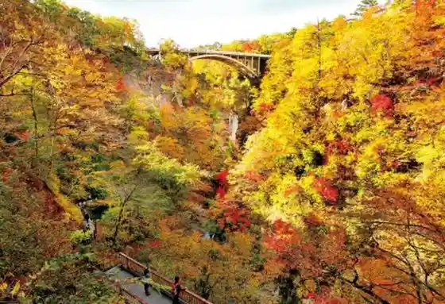
Naruko Gorge Rest House Viewpoint
Lookout rest house above Naruko Gorge
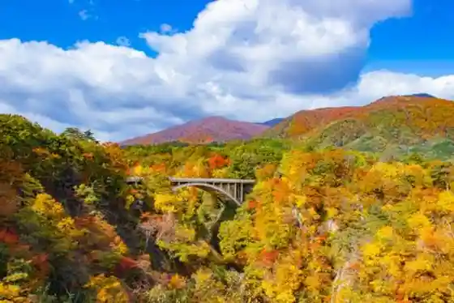
Onikobe Eco Road Autumn Foliage
Autumn drive along the Onikobe Eco Road
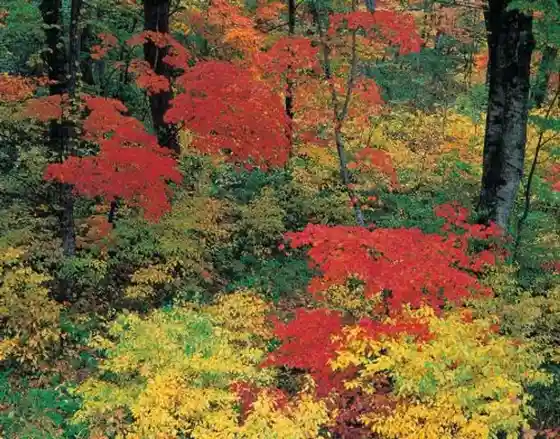
Onikobe Geyser
Intermittent hot-spring geyser in Onikobe
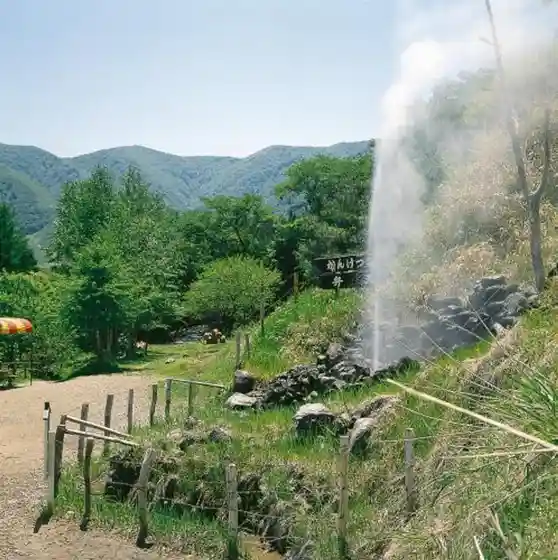
Katanuma Pond
Crater pond near Naruko Onsen
Kemenuma Pond
Wetland pond in the Furukawa area
Kabukurinuma Pond
Important waterbird wetland in Tajiri
Iwadeyama Castle Ruins & Shiroyama Park
Castle-hill park in the Iwadeyama district
Former Yubikan & Garden
National historic site and scenic garden in Iwadeyama
Sambongi Sunflower Hill
Summer sunflower fields in Sambongi
Miyagi Olle Osaki–Naruko Course
Marked walking course through Osaki and Naruko Onsen
Sense Museum
Interactive museum of the senses in Iwadeyama